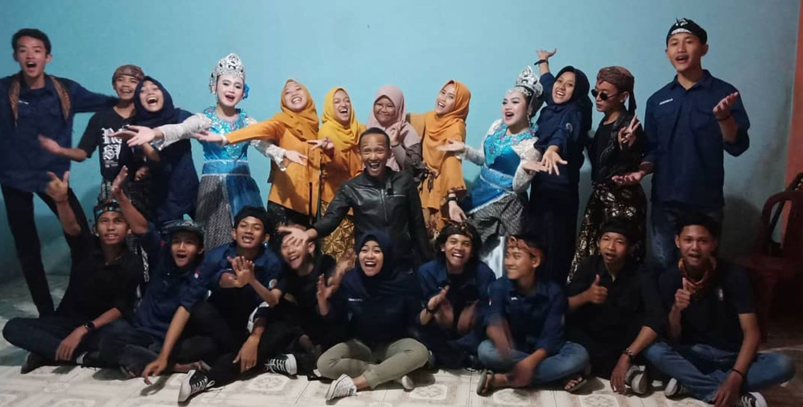

Acara Kesenian Sunda
Deskripsi Kegiatan
Di era ketika lagu-lagu daerah tersisih oleh playlist digital dan tari tradisional bersaing dengan konten media sosial, SABANUSA memilih untuk melawan arus. Pada 9 September 2019, kami menggelar pentas seni budaya Sunda bertajuk "Ngahiang Budaya" — sebuah malam yang membuktikan bahwa warisan leluhur kita masih sangat hidup, sangat indah, dan masih sanggup membuat ratusan orang berdiri dan bertepuk tangan.
Cerita Lengkap
Lapangan RW 03 Desa Cikalong biasanya hanya ramai saat pertandingan bola atau acara tujuh belasan. Tapi malam itu, 9 September 2019, lapangan itu berubah menjadi panggung budaya yang menyedot lebih dari 300 penonton dari berbagai usia. Anak-anak duduk bersila di barisan paling depan dengan mata berbinar. Para orang tua berdiri di belakang, sesekali berbisik kepada anak mereka, "Itu namanya angklung. Dulu kakek nenekmu yang memainkannya."
Persiapan acara ini bukan perkara mudah. Selama berminggu-minggu sebelumnya, anggota-anggota SABANUSA berlatih keras di sela-sela kesibukan masing-masing. Ada yang belajar Jaipong dari nol — berulang kali jatuh bangun menyesuaikan gerakan yang ternyata jauh lebih sulit dari yang terlihat di YouTube. Ada yang belajar memainkan angklung, kecapi, dan calung dari sesepuh kampung yang dengan sabar mengajarkan teknik dan napas di balik setiap nada.
🎭 Penampilan Malam Itu
- Drama tari Jaipong pembuka — dibawakan 8 penari SABANUSA
- Penampilan angklung dengan lagu-lagu daerah Sunda klasik
- Kecapi suling — membawakan lagu "Bubuy Bulan" dan "Es Lilin"
- Rampak gendang yang mengguncang lapangan dengan ritme penuh semangat
- Penampilan calung dan lagu daerah bersama seluruh penonton
- Workshop mini alat musik tradisional untuk anak-anak
- Sosialisasi pelestarian budaya lokal di era digital
Penampilan pertama, drama tari Jaipong, langsung mencuri perhatian. Delapan penari SABANUSA melangkah ke panggung dengan kostum tradisional lengkap — kebaya, selendang, dan hiasan kepala yang berkilauan di bawah sorot lampu. Gerakan Jaipong yang lincah dan ekspresif membuat penonton terpaku. Siapa sangka, para pemuda yang biasanya terlihat santai dengan celana jeans dan kaos polos, malam ini tampil begitu anggun dan penuh penghayatan.
Puncak acara adalah penampilan calung dan nyanyian lagu daerah bersama. Ketika melodi pembuka "Bubuy Bulan" mengalun, sesuatu yang ajaib terjadi: para penonton lanjut usia yang tadinya hanya menonton diam-diam mulai ikut bersenandung pelan. Kemudian semakin keras. Dan dalam beberapa menit, seluruh lapangan menyanyikan lagu itu bersama-sama — tua muda, besar kecil, semua dalam satu suara. Beberapa nenek dan kakek mengelap sudut mata mereka.
Di sela-sela pertunjukan, anak-anak diundang naik ke area kecil untuk mencoba memainkan angklung dan calung secara langsung. Tangan-tangan mungil mencengkeram batang bambu dengan penuh semangat, mengikuti arahan kakak-kakak SABANUSA yang dengan sabar mengarahkan. Momen itulah yang paling bermakna — bukan sekadar pertunjukan yang ditonton, melainkan ilmu yang secara langsung dipindahkan dari satu tangan ke tangan lainnya.
Malam itu ditutup dengan sesi sosialisasi ringan tentang pentingnya menjaga dan mencintai budaya lokal di tengah gempuran era digital. Bukan dengan ceramah yang menggurui, melainkan dengan diskusi santai yang mengajak semua orang — muda dan tua — untuk berbagi perspektif mereka tentang budaya dan identitas.
Acara Kesenian Sunda 2019 membuktikan satu hal yang ingin selalu SABANUSA tegaskan: bahwa mencintai budaya lokal bukan berarti kuno atau ketinggalan zaman. Justru sebaliknya — di situlah letak keunikan kita, kebanggaan kita, dan akar yang membuat kita tidak mudah tumbang diterpa angin perubahan. Selama masih ada pemuda yang mau belajar dan mempertunjukkan, selama itu pula budaya Sunda akan terus hidup dan berdenyut.